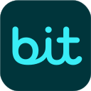

התוסף פותח בעבר על ידי מאור לוי ומפותח בהווה על ידי איתן "67" עמירן, הכל בהתנדבות, ואינו נתמך בשום צורה על ידי הטכניון. קישור למאגר הקוד של התוסף, המכיל את כל המידע על התוסף, נמצא כאן.
פרטיות
פרטי המשתמש וההגדרות שבשימוש התוסף נשמרים בזיכרון הדפדפן של המשתמש בלבד. נתונים אלו לא נשמרים על ידי התוסף בשרת כלשהו, ואינם מועברים לגורמים חיצוניים. ניתן לקרוא את מדיניות הפרטיות המורחבת כאן.
יצירת קשר עם מפתח התוסף
מצאתם תקלה? באג? משהו שלא עובד? יכולים לשלוח מייל, אבל אעדיף דיווח על תקלה במאגר הקוד, כאן:
דווח על תקלה
יש לכם עצה? חשבתם על פי'צר חדש? סתם רוצים לדבר? לחיצה על הכפתור תפתח חלון לשליחת מייל בהתאם להגדרות התוסף.
צור קשר
תרומה למפתח התוסף 🙂
התרומה הנחמדה ביותר שתוכלו לתרום היא כוכבים בדף של ++Technion
בקטלוג התוספים של
Google Chrome.
אם תרצו לעשות מעל ומעבר, אז...
המפתח המקורי השקיע שעות רבות מזמנו בפיתוח התוסף, ולכן אני משאיר כאן לינק ל־Paypal שלו,
אם אתם רוצים ויכולים לתרום לו.
אני גם משקיע המון זמן בפיתוח ותחזוקת התוסף, אז אשמח אם תתרמו גם לי, אם אתם רוצים ויכולים כמובן.
תרומה של כל סכום תתקבל בברכה :)
תרומה למפתח המקורי:
תרום ב-
תרומה למפתח הנוכחי (קישור להעתקה לטלפון
כאן וקוד QR להלן):
תרום ב-